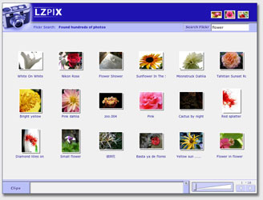

This application opens in a window. If you don't see it, you may need to bring that window to the front.
LZPIX uses OpenLaszlo to enrich the user experience of Flickr, a popular photo sharing site on the web, demonstrating dynamic interaction between a rich web client and a large, complex data base containing text and photos.
Type in a subject to select photos by. The application draws a selection of photos from the Flickr database. Use the slider bar to increase or decrease their size. Double-click to see a larger version of each photo and details about it. You can drag a photo or group of photos to the "Clips" section (further uses of the "clips" section are left as an exercise for the intrepid developer!).